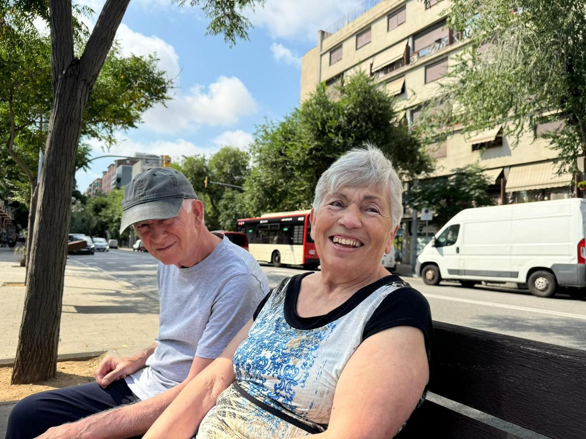
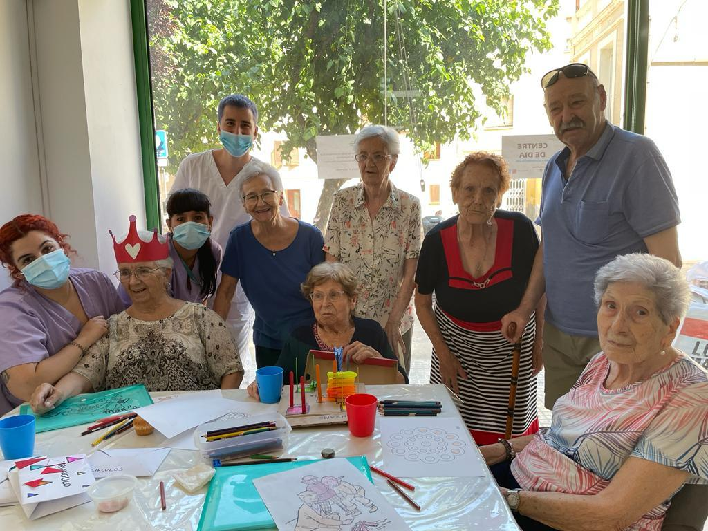

Vilanova i la Geltrú
Centre de dia Recreo
Carrer del Recreo, 80, 08800
Dilluns a divendres · 8:00 – 19:00
Centres de dia per a gent gran a Vilanova i la Geltrú, Sitges, Molins de Rei i Barcelona. Acreditats per la Generalitat de Catalunya i amb més d'una dècada d'experiència.

Cinc centres propers, amb el mateix equip humà i la mateixa manera de cuidar.
Vilanova i la Geltrú
Carrer del Recreo, 80, 08800
Dilluns a divendres · 8:00 – 19:00
Sitges
Carrer Salvador Soler i Forment, 13, 08870
Dilluns a divendres · 8:00 – 19:00
Molins de Rei
Plaça Pompeu Fabra, 1, 08750
Dilluns a divendres · 8:00 – 19:00
Barcelona (Sant Andreu)
Carrer de l'Almirall Pròixida, 10, 08030
Dilluns a divendres · 8:00 – 19:00
Molins de Rei
Carrer de Santiago Rusiñol, 12, baixos, 08750
Dilluns a divendres · 8:00 – 17:00
Un equip professional que acompanya cada persona en tot el que necessita durant el dia.
Millorem la mobilitat, alleugem molèsties i promovem el benestar físic, amb una atenció adaptada a cada persona.
Seguiment de constants vitals, gestió i administració de medicaments, revisió de dietes i promoció de la salut.
Entrenament en les activitats de la vida diària, tallers d'estimulació cognitiva i assessorament en ajudes tècniques.
Acompanyament i ajuda en la higiene, l'alimentació i les activitats de cada dia, hidratacions i servei de dutxes.
Activitats d'animació, festes populars i tallers manuals i creatius que fomenten la motivació i les relacions.
Anem a buscar i tornem a casa amb transport adaptat, perquè arribar al centre sigui còmode.
Atenció especialitzada per a la cura dels peus i una mobilitat còmoda i saludable.
Tall de cabell i tractaments capil·lars perquè se sentin bé i ben cuidats.
Suport a casa per a persones amb autonomia limitada, perquè puguin continuar al seu entorn amb bones condicions.
T'expliquem com treballem i resolem els teus dubtes, sense compromís.
Us ensenyem les instal·lacions i coneixem la persona i les seves necessitats.
Preparem una atenció personalitzada i, si cal, organitzem el transport.

Benvinguts al Grup Cuida. Els nostres centres tenen més d'una dècada d'experiència i estan registrats al Departament de Benestar Social de la Generalitat de Catalunya com a centres acreditats, complint la normativa vigent.
Tots els nostres professionals estan acreditats i treballen amb professionalitat, compromís i responsabilitat. Acompanyem els usuaris en tot moment en un ambient proper, còmode i tan familiar com sigui possible, buscant la complicitat entre professionals i usuaris perquè les activitats siguin atractives i despertin l'interès.
El meu pare ha estat un any anant al Centre de Dia Recreo. L'equip de cuidadores és estable, la qual cosa ens dona confiança i tranquil·litat, i donen una acurada atenció. Són magnífiques professionals. La direcció també ha estat sempre a sobre per adaptar-se als canvis i successives necessitats i la feina de la neuropsicòloga ha estat rellevant. I tot això, sense sortir del barri. Molt agraïts.
La meva àvia està encantada al centre, la venen a buscar a casa, té amigues, fa gimnàstica i activitats cada dia i s'ho passa molt bé. Tracte genial!!
Podran experimentar emocions que creien perdudes, humor, gimnàstica, millora de les habilitats socials i cognitives... i molt més perquè la gent gran sí que importa!!
Truca'ns i t'expliquem com podem ajudar-vos. Us ensenyarem el centre sense compromís.